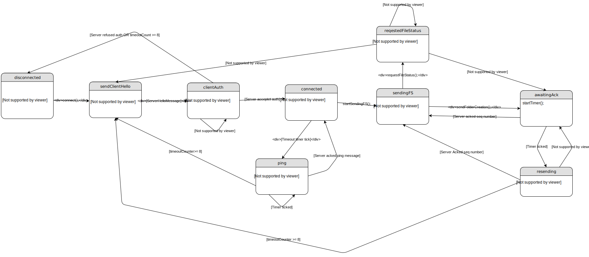
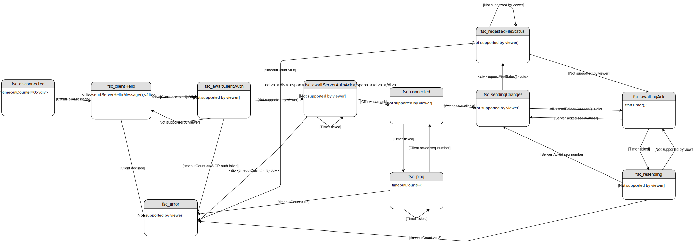

Type [4 Bit]:
0000 => Client-Hello-Handshake
0001 => Server-Hello-Handshake
0010 => File-Creation
0011 => File-Transfer
0100 => File-Status
0101 => ACK
0110 => Ping
0111 => Transfer-Ended
1000 => Auth-Request
1001 => Auth-Result
Client ID [32 Bit]:
An unique client id generated by the client on first contact.
E.g. A random int
Checksum [32 Bit]:
CRC32 Algorithm Wiki Link
Sequence Number [32 bit]:
Like TCP.
FID Length [64 Bit]:
The length of the FID field in bytes.
FID [Defined in the FID Length filed]:
The relative path to the file. Includes the file name e.g. folder/file.txt.
FID Part Number [32 Bit]:
The file part number.
Pub Key [32 Bit]:
The client public key for the Diffie Hellman encryption.
The initial connection message that gets send by the client.
0 4 8 24 56 88 120 152
+------+-------+------+-----------+--------------+----------------+---------+
| Type | Flags | Port | Client ID | Prime Number | Primitive Root | Pub Key |
+------+-------+------+-----------+--------------+----------------+---------+
152 184 216 1000
+----------+-----------------+----------+--------+
| Checksum | Username Length | Username | UNUSED |
+----------+-----------------+----------+--------+
Flags [4 Bit]:
0000
||||
|||+-> Connect requested
||+--> Reconnect
|+---> *UNUSED*
+----> *UNUSED*
Port [16 Bit]:
The port on which the client listens to server messages.
Prime Number [32 Bit]:
The client prime number for the Diffie Hellman encryption.
Primitive Root [32 Bit]:
The client primitive root for the Diffie Hellman encryption.
Username Length [32 Bit]:
Describes how long the the following Username is in byte.
Username [X Byte]:
Defined via the Username Length.
UNUSED [816-X Bit]:
To "prevent" DoS attacks. Ensures the package is a least 1000 Bit long.
Once the server received a Client-Hello-Handshake message he should reply with this message.
0 4 8 40 72 88 120 152
+------+-------+-----------+-----------------+-------------+---------+----------+
| Type | Flags | Client ID | Sequence Number | Upload-port | Pub Key | Checksum |
+------+-------+-----------+-----------------+-------------+---------+----------+
Upload-port [16 Bit]:
The Port where the client should send all following messages to.
Flags [4 Bit]:
0000
||||
|||+-> Client accepted
||+--> Too many clients - connection revoked
|+---> Client ID taken - connection revoked
+----> Invalid username - connection revoked
Marks the start of a file transfer. Tells the server to create the given file with the given path. Replaces existing files.
0 4 36 68 72 328 360 424
+------+-----------+-----------------+-----------+----------+----------+------------+-----+
| Type | Client ID | Sequence Number | File Type | File MD5 | Checksum | FID Length | FID |
+------+-----------+-----------------+-----------+----------+----------+------------+-----+
File Type [4 Bit]:
0000
||||
|||+-> Folder
||+--> Delete folder
|+---> File
+----> Delete file
File MD5 hash [256 Bit]:
The file MD5 hash to check if the file was transmitted correctly. Unused for folders. Wiki Link
The actual file transfer message containing the file content.
0 4 36 68 72 104
+------+-----------+-----------------+-------+-----------------+
| Type | Client ID | Sequence Number | Flags | FID Part Number |
+------+-----------+-----------------+-------+-----------------+
104 360 392 456
+--------------+----------+----------------+---------+
| FID SHA3 256 | Checksum | Content Length | Content |
+--------------+----------+----------------+---------+
Flags [4 Bit]:
0000
||||
|||+-> First package for the given file
||+--> File content
|+---> *UNUSED*
+----> Last package for the file
FID SHA3 256 [256 Bit]:
The SHA3 256 hash of the FID to identify which file gets.
Content Length [max 900 Bit]:
The length of the Content field.
Content [defined in "Content Length" in Bit]:
The actual file content.
Used for requesting and responding the current file status bevor a file gets transfered.
0 4 8 40 72 104
+------+-------+-----------+-----------------+----------------------+
| Type | Flags | Client ID | Sequence Number | Last FID Part Number |
+------+-------+-----------+-----------------+----------------------+
104 136 200
+----------+------------+-----+
| Checksum | FID Length | FID |
+----------+------------+-----+
Flags [4 Bit]:
0000
||||
|||+-> Request status of FID
||+--> FID status response
|+---> Restart sending file system
+----> File = 0/Folder = 1
Last FID Part Number [32 Bit]:
The last received FID Part Number. Ignored if Request status of FID is set.
For acknowledging Ping, File-Creation and File-Transfer messages.
0 4 36 68 72
+------+---------------------+----------+--------+
| Type | ACK Sequence Number | Checksum | UNUSED |
+------+---------------------+----------+--------+
ACK Sequence Number [32 Bit]:
The acknowledged Sequence Number or Ping Sequence Number.
Gets send by the client once he wants to end the transfer/close the connection.
0 4 8 40 72
+------+-------+-----------+----------+
| Type | Flags | Client ID | Checksum |
+------+-------+-----------+----------+
Flags [4 Bit]:
0000
||||
|||+-> Transfer finished
||+--> Cancelled by user
|+---> Error
+----> *UNUSED*
This message is used for ensuring the opponent is still there. The opponent should acknowledge each received Ping message with an Server-ACK.Should get send by each side if there was no message exchange for more than 2 seconds.
It also can be used for package loss and throughput tests with a modified Payload Length.
0 4 36 68 100 104 136
+------+----------------------+-----------+----------+--------+----------------+---------+
| Type | Ping Sequence Number | Client ID | Checksum | Unused | Payload Length | Payload |
+------+----------------------+-----------+----------+--------+----------------+---------+
Ping Sequence Number [32 Bit]
An unique number for identifying each ping.
Payload Length [32 Bit]:
Describes how long the the following payload is in byte.
Payload [X Byte]:
Defined via the Payload Length.
Send by the client to authentificate at the server.
0 4 8 40 72 104
+------+--------+-----------+----------------------------------------+----------+
| Type | UNUSED | Client ID | Server-Hello-Handshake Sequence Number | Checksum |
+------+--------+-----------+----------------------------------------+----------+
104 136
+-----------------+----------+
| Password Length | Password |
+-----------------+----------+
Server-Hello-Handshake Sequence Number [32 Bit]:
The sequence number of the Server-Hello-Handshake message.
Password Length [32 Bit]:
Describes how long the the following password is in byte.
Password [X Byte]:
Defined via the Password Length.
Send by the server with the authentification result.
0 4 8 40 72 104
+------+-------+-----------+------------------------------+----------+
| Type | Flags | Client ID | Auth-Request Sequence Number | Checksum |
+------+-------+-----------+------------------------------+----------+
Flags [4 Bit]:
0000
||||
|||+-> Authentification successfull
||+--> *UNUSED*
|+---> *UNUSED*
+----> *UNUSED*
Auth-Request Sequence Number [32 Bit]:
The Sequence number of the received ````Auth-Request``` message.

The server it selfe is stateless but it has FileServerClient objects with the following state chart:

Client Server
| Client-Hello-Handshake |
| ------------------------------> | The clients starts the connection on the default port
| | and tells the server the port on which he listens for answers.
| | It also contains ```ClientStartConnection``` key exchange data.
| Server-Hello-Handshake |
| <------------------------------ | The server responds with an upload port and the
| | ```onServerReceive``` key exchange data.
| Auth-Request |
| ------------------------------> | If the client got accepted he sends his password via the
| | now encrypted connection.
| Auth-Result |
| <------------------------------ | The server answers with the result of the authentification.
| | Now the connection is established.
| File-Status |
| ------------------------------> | The client requests the file status.
| |
| Auth-Result |
| <------------------------------ | The server responds with the current file status.
| |
| File-Creation |
| ------------------------------> | The client sends this message if the server does not has
| | the file yet.
| Server-ACK |
| <------------------------------ | The server acks the ```File-Creation```.
| |
| File-Transfer |
| ------------------------------> | The client starts sending the file in chunks.
| |
| Server-ACK |
| <------------------------------ | The server sends an ACK message for each message
| | it received from the client
| File-Transfer |
| ------------------------------> | The client sets the ```Last package for the file``` flag
| | to inform the server, it is the last file part.
| Server-ACK |
| <------------------------------ |
| |
| Transfer-Ended |
| ------------------------------> | The client tells the server that he liks to close the connection.
Client Server
| ClientStartConnection |
| ------------------------------> | Client calculates and sends P, G to the server.
| |
| onServerReceive |
| <------------------------------ | Server calculates it's shared key, public key and sends it's
| | public key to client.
| | Sets secureConnection to true.
| onClientReceive |
| ------------------------------> | Client calculates it's shared key.
| | Sets secure connection to true.
Diffie-Hellman algorithm relies on discrete logarithm problem. It is very hard for computers to solve discrete logarithm thus it is a good candidate against brute force attacks. This implementation works like this:
Client and server have to have the common values P and G. P is a prime number and G is the primitive root of that number. As connections are initiated by client, both P and G is calculated by client. Before sending P and G, client generates a private key and calculates it's public key. P , G and client's public key are sent to server by the client at the beginning of the connection.
Server receives P , G , and client's public key. It selects a private key for itself and calculates it own public key. At this calculation, server also successfully calculates the shared key that the encryption will be based on.
Client receives server's public key and calculates the shared key. At this point both server and the client have the same shared key which has never transmitted through insecure channels.
Exposed API of Encrypt and Decrypt uses that shared key to encrypt and decrypt messages.
More info can be found at: Wiki Link
In order to do file sync we check periodically if there were files changed (It's planned to switch to Filsystem watcher to monitor for changes). To detect which files were changed we compare the MD5's of the files to internally saved hashes of them on the last run.